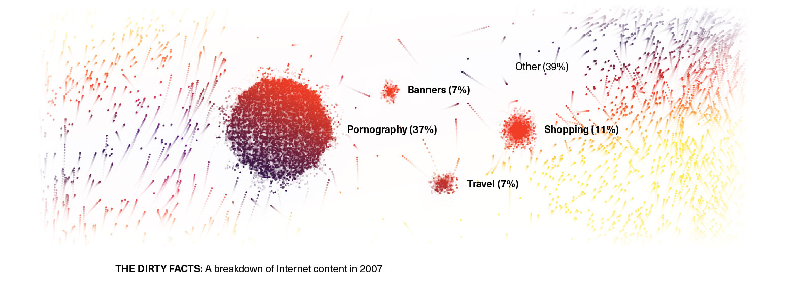

If you were trying to name the greatest invention in human history, it would be hard to beat the stone chopping tool and the hand ax. They are the second and third entries in the excellent book A History of the World in 100 Objects, based on the British Museum project of the same name. Considered out of context, they are unimpressive things, crude chunks of rock shaped into marginally useful objects. But in the short, brutish lives of our ancestors, these tools were of inestimable value. They marked the crucial turning point when we realized the ability to produce things and began to see the world as malleable to our needs. There is even evidence that making and using these tools helped us learn to talk. And here's something else: The hand ax was a dominant technology of mankind for more than a million years.
It's funny to think about that today, when an original iPod from 2001 looks as dumb and balky as, well, a prehistoric hand ax. Nobody has to plan obsolescence anymore; it just happens. Innovation is the constant of our lives. Everybody is an expert on how it's done. New products, services and concepts are pitched at us daily. This book is devoted to innovation and its assorted mysteries. Where do good ideas come from? How do they catch on?
“Nothing in our own time approaches the significance of electricity or the internal-combustion engine. A time traveler from 1970 would look at our world and be mostly unamazed.”
Among the big questions raised by our exploration is whether our innovation-saturated culture is as magnificent as we like to think. How many of these new things actually improve our lives, as opposed to distracting us from more productive activities? Two years ago, the economist Tyler Cowen published The Great Stagnation, in which he argued that we are in an innovation rut, that the last 50 years or so have lacked the kind of transformational change that characterized the 100 years before that. Nothing in our own time approaches the significance of electricity or the internal-combustion engine. A time traveler from 1970 would look at our world and be mostly unamazed. We congratulate ourselves for spectacular achievements like putting a man on the moon, but what has society really gained from that? Teflon and Tang, Cowen says.
Meanwhile, the great hope of our age — the Internet — has yet to boost our standard of living significantly. It has, however, boosted our capacity for distraction, procrastination, extended inquiries into trivia, locating the ideal restaurant for every possible occasion and pornography. Now, for some, those things equal a higher standard of living. But we are still waiting, Cowen says, for the great leap forward.
Cowen's point is that under the hood of our hallowed free market is a bazaar of nutty, half-cocked ideas that do not advance the greater cause of humanity one tiny bit. But there's another interpretation, too, which is: The sheer volume and range of these inventions demonstrate a rapidly growing population of problem solvers with the tools to turn their ideas into tangible things.
Let me use an example that Cowen has not cited in his "great stagnation" series, though it would certainly qualify: Booty Pop, padded underwear that makes a person's backside look bigger and shapelier, an idea so simple it's incredible that it took until 2008 for someone to perfect it. As a technology and a signifier of our times, it is unenlightening. But the manner in which it was conceived is not. Two friends named Lisa Reisler and Susan Bloomstone were struck by the popularity of butt-lift surgery and thought there had to be a safer, cheaper way for women to achieve the same effect. So Reisler glued the padding from her bra into a pair of underpants, found a manufacturer in Asia to produce a version of it that met her specifications and then introduced it to the world on a cable-television show. They have since sold almost two million Booty Pops.
This democratization of the marketplace happens to coincide with the development of Big Data. These days, companies are learning as much as they can about their customers so they can turn around and sell us exactly what we want. It creates a herd mentality, as everybody aims for the big, fat middle. Nick Denton, the owner of Gawker Media, was talking about digital media, but he could have been talking about nearly any industry, when he lamented recently to Wired that "the idea of harnessing the intelligence of the readership has been lost in the quest for Facebook likes."
The answer to that question is a series of stories. We learn how few of the things we most value sprang from corporate labs or marketing departments. Mostly they came from people trying to solve a problem of their own, like the New Jersey cotton buyer with the injury-prone wife (the Band-Aid). The ground for this type of practical problem solving is more fertile than ever, says the technology theorist Clay Shirky who believes technology frees up our time and gives us the tools to use it more creatively and collaboratively.
Milton Levine was at a picnic one day in 1956 when the sight of some ants inspired him with this thought: He enjoyed watching ants on his uncle's farm as a child; other children would no doubt enjoy watching them, too. Within a few months, Levine, a toy salesman who specialized in mail- order novelties like toy soldiers and shrunken heads, and his brother-in- law, Joe Cossman, had a product. Each ant “farm” kit included plastic housing, white sand for the ants to tunnel in and a coupon for consumers to redeem by mail for a vial of live ants. After clearing some early hurdles — finding a glue that wouldn't kill the ants — the kit soon became the first massively popular ant farm, a hit with both teachers and children. By 2002, more than 20 million had been sold.
Josephine Dickson, a New Jersey housewife prone to nicking herself in the kitchen, inspired her husband, Earle, a 28-year-old cotton buyer, to find an efficient way to protect her frequent injuries. He took a strip of gauze, laid it down on the sticky side of some surgical tape and over both laid a strip of crinoline so the whole could be rolled up and not stick to itself. Thereafter, whenever his wife cut herself, she could cut off a ready-made bandage, instead of having to resort to the standard remedy of 1920: a strip of rag or gauze held in place with string. At the time, Dickson was working for Johnson & Johnson, which was already marketing sutures, bandages and hygiene products. He presented his innovation to higher-ups, who immediately recognized its utility. When Band-Aids did not sell well in their first year or two, the company started distributing them free of charge to a demographic that had an even greater need than housewives — Boy Scouts.
The central obstacle to bike-sharing programs has never been getting people to use the bikes — it's getting people to bring them back. This conundrum sank the first experimental urban bike-sharing program, a kind of utopian art prank undertaken in Amsterdam in 1965 by Luud Schimmelpennink and the anarchist group Provo, which scattered “White Bikes” around the streets for anyone to freely enjoy. Despite an inauspicious debut — the White Bikes were mostly stolen or trashed — the concept spread across Europe over the next 30 years, accompanied by innovations to ensure the return of the bikes: deposits, annual memberships, tamper-resistant cycles, smart cards, mobile-phone access. The largest program in the U.S. now belongs to New York City, where CitiBike started in May, with 6,000 bikes stored at computer-controlled docking stations and available for short-term rentals, paid for by debit or credit cards.
Two promoters at the Tunnel in Chelsea, Mark Baker and Jeffrey Jah, changed the downtown club scene in New York in the early ‘90s by selling whole bottles of liquor at V.I.P. tables; they imported the notion from a club in Paris where Baker says bottles of Polish military vodka were passed off as brand-name booze. In other words, the price gouging has long been part of the idea, even before the 1,000 percent markups, the 20 percent gratuities and the multi-thousand-dollar minimums to reserve tables. In its early days in New York, though, bottle service “was an amenity, not a moneymaker,” Jah says. A bottle was priced for the number of cocktails it could pour.
Steve Sasson was the new guy at a Kodak research lab when his boss asked him to investigate a novel type of sensor called a charge-coupled device (C.C.D.). It was 1974, and the conversation lasted barely 20 seconds. “This project would've been the least important one going on at that time,” Sasson says. A year later, armed with the prototype for what he called a “filmless camera,” which was the size of a small toaster and weighed 8.5 pounds, Sasson took a portrait of Joy, a woman who worked down the hall. The camera's C.C.D. used a grid of capacitors to measure the incoming photons of light and convert them into electrical signals. That technology wasn’t Sasson's invention. But he found a way to encode and permanently store the C.C.D. data and to use software to convert that data into a recognizable image that could be
displayed on a Sony Trinitron television. “Needs work,” Joy said when the black-and-white, 100-by-100-pixel image of her came up on the screen.
But Sasson was ecstatic.
When the City of Berkeley demolished a swath of houses in the late 1970s to build the Bay Area Rapid Transit system underground, residents began to gather in the space that had been cleared. Many of them were neighbors, who also brought their dogs, and before long a woman named Doris Richards encouraged the group to turn the space into a dog park. “There were ‘No Dogs’ signs all over the place,” Gail Green, part of that original cohort, says of Berkeley at the time. “We needed to have a place to go and let the dogs run.” What started as an experimental dog park in 1979 became officially incorporated in 1986.
In the spring of 1964, a 25-year-old fashion illustrator in London named Barbara Hulanicki designed a pink gingham dress inspired by one in which Brigitte Bardot had been photographed. A friend of Hulanicki's, an editor at The Mirror who wanted to do a feature about inexpensive fashion, told her she would include the design as long as it cost no more than 25 shillings. Hulanicki agreed, and within 24 hours of publication she received close to 4,000 orders. That success paved the way for Biba, a store that Hulanicki and her husband opened in Kensington in the fall of that year. Biba pioneered the model of cheap, youthful designs, with a quick turnaround time and a steady supply of fresh inventory. “We had daily deliveries, like bagels,” Hulanicki, now an interior designer, says. Twiggy, a regular customer, helped make the mod designs a defining look of the era.
Eventually it would come to define how a generation of women viewed their working lives, but when Marilyn Loden used the expression extemporaneously at a Women’s Action Alliance conference in May 1978, she says it fell on deaf ears. Loden was a manager in New York Telephone’s human-resources department, where she had seen reams of company data showing that gender bias had stymied the careers of women there. “I used to say that there are so many capable women here, and they’re hitting their heads on the ceiling,” she recalls today. Then, when she happened to be on that panel listening to relatively powerful women repeat the conventional wisdom of the day, she says, she grew frustrated and sharpened her language. “Because we were talking about self-image and what you see in the mirror” — the panel's title was “Mirror, Mirror on the Wall” — “the whole glass metaphor kind of came to me. It's not what we see in ourselves but what we don't see. It's not what's in front of us, but what's above us.”
During the electric guitar's toddler days in the early 1930s, its players were largely tasked with carrying the rhythm while brass and reed instruments soloed in the spotlight. The Smithsonian credits Eddie Durham with the first amplified guitar solo on record — he spins some wry lines on the Jimmie Lunceford Orchestra’s 1935 swing number “Hittin’ the Bottle.” But it took Charlie Christian to advance the form toward its perpetual brash adolescence.
Born in Bonham, Texas, in 1916, Christian came to fame in Benny Goodman's band, and his solos first appeared on records in 1939. Christian's spiraling choruses on “Stompin’ at the Savoy,” for example, crackle with the confidence of a musician unwilling to strum away behind a trumpeter. “If you dropped Charlie Christian into the ‘60s,” G.E. Smith says, “he would've made music like Hendrix. He was that advanced.” Christian presaged the soloing guitar wizard in another more unfortunate way: He died young, from tuberculosis, when he was 25.
In the 1950s, Bette Nesmith Graham was a single mother working as a secretary in Dallas during the day and making commercial artwork for local merchants at night. Her two worlds intersected when manual typewriters, whose inked typescript could be rubbed out with coarse erasers, gave way to electrics, whose carbon ribbons made correcting mistakes much more laborious.
Graham started mixing tempera paint at home so it would match the color of her white bond paper and taking it to the office in nail polish bottles to correct her typing mistakes. Her co-workers wanted to use it, too. So she began whipping up what she called Mistake Out in a KitchenAid mixer at home. Her son, Michael Nesmith, who later became the guitarist for the Monkees, filled the nail-polish bottles using ketchup and mustard dispensers. By the late ‘50s, Graham had hired experts to make her mix faster-drying, renamed it Liquid Paper and started selling it more widely. Gillette bought Liquid Paper in 1979 for $47.5 million, the year before Graham died.
“Try making little sandwiches … of three very thin layers of bread and two of filling, one of peanut paste, whatever brand you prefer, and currant or crab-apple jelly,” Julia Davis Chandler wrote in November 1901. “The combination is delicious, and, so far as I know, original.” This is the earliest reference to peanut butter and jelly, and it appeared before the ingredients were widely available — you might have had to grind your own peanuts. It would be a while before the sandwich became a hit among those it's most associated with: children. That happened later, after peanut butter became available in jars in supermarkets and was marketed to children in the 1930s.
Although senior proms were held at U.S. colleges in the late 1800s, it wasn't until after the turn of the century that the practice trickled into high schools, gradually morphing from an ordinary banquet or tea dance into a gilded evening that mimicked the lavish coming-out parties of heiresses that dominated the society page. Even the word sounded elegant, an abbreviation of “promenade,” the stately march guests once made at the start of formal parties, particularly debutante balls. The prom flourished in the ‘30s, went into hibernation during World War II and then re-emerged — bulked-up on postwar affluence and teenage culture — as the pricey all-night affair we know today. As a New York Times article explained in 1960, “High-school prom night ... is the night a boy becomes a man of the world and never stops spending.” Back then, parents fussed that prom-night costs could reach $75. This year, the average prom-going teenager racked up $1,139 in expenses.
The first man-made climbing structure was designed by a Seattle Boy Scout leader and mountaineer, Clark Schurman, and completed by the W.P.A. in 1939. The first indoor wall designed to simulate holds encountered in rock climbing was at the University of Leeds in England. A lecturer in the school's physical-education department, Don Robinson, noticed in 1964 that area rock climbers sustained a disproportionate number of injuries in the spring. Robinson attributed this to their habit of “spending most of the winter indoors, drinking beer.” A climber himself, he says, “I thought if I could make an artificial climbing structure, they'd climb on it in the winter and stay in shape.”
Throughout the ‘70s, “Krazy” George Henderson, a rabid fan of San Jose State’s football team, regularly took it upon himself to rouse the students at home games. At his bidding, the first of three adjacent sections would stand, shout, “San!” then quickly sit down. The next two would follow with “Jose!” and “State!” When Henderson became a professional cheerleader and was hired by the Colorado Rockies hockey team at the end of the decade, he taught four sections of fans to cheer, “Go!” in quick succession. He says one evening, spontaneously, a fifth section followed, and was succeeded by another and another, until the cheer made its way all around the stadium. The world saw Henderson’s wave on Oct. 15, 1981, at a playoff game between the Oakland A’s and the New York Yankees. Henderson directed participating sections to boo those who didn't join in, until everyone caught on and the wave rolled its way around the packed stadium, the first one caught on camera.
Thomas Eakins’s 1875 painting of an operating theater, “The Gross Clinic,” depicts a doctor and his assistants dressed in stiff, black Victorian jackets, the same clothes you would expect them to wear on the streets of Philadelphia. Fourteen years later, Eakins painted another surgery in “The Agnew Clinic,” and this time the doctor wears the type of white smock we now associate with science and sterility. In the interval, medicine was becoming something that happened in laboratories, not just in doctor's offices; by the late 19th century, doctors felt increased pressure to portray themselves as scientists because of the emergence of the germ theory of disease. So they traded their formal wear for the tan smocks that were long worn by chemists. Then came white coats — which signified purity — as sterilization came into vogue.
In the early 1970s, Donald Perry was a graduate student studying the rain forests of Central America. To get closer to the treetops, he first climbed a rope, ascending inchworm-like; once in the canopy, about 15 stories up, he then devised an intricate system of ropes and, later, steel cables that he slowly moved around on. “There was a whole continent of life up there, waiting to be investigated,” Perry says. “That was tremendously thrilling.”
Perry wasn't the first to use a zip line. Its use dates back more than a century at least, as a means of crude transport across mountains and canyons. But his lines were different in that they attracted the press and then, later, tourists. Perry himself recognized the economic potential of zip lines, opening the Rain Forest Aerial Tram in 1994. Others followed, first in Central America, then in the U.S., and within a decade zip lines became a big business. There are more than 600 large-scale zip-line tour operations in the U.S. and Canada, Michael R. Smith, the managing partner of ArborTrek Canopy Adventures, says. By the end of the year, he estimates, it will be a $770 million industry.
Smart cities have always existed in people's heads. Since Plato’s Republic, people have dreamed of the perfect community, where citizens live in harmony, life is good, technology is harnessed and everything works. Today, big ideas about improving city life continue to pour forth from futurologists, academics and think tanks. But what really transforms a bright idea into a world-class innovation?
Plugging in to new technology at first appears a sure-fire route to success. City planning today seems like the stuff of science fiction. The microchip and the internet, according to this doctrine, are the keys to making cities more livable, integrated and even “intelligent”. Long ago, city fathers may have yearned for the chariots to run on time, but today they daydream of robot fridges, electric car pools and skyscraper urban farms.
In some of the unlikeliest locations, whole new cities are planned based on the latest in carbon-neutral thinking and digital technology. In Abu Dhabi, the Masdar City project is a six square kilometer walled development billed as “the world's first zero-carbon, zero-waste city”, designed by London-based Fosters and Partners. In China, a new city at Guangming will be so “smart” it hurts. Cities old and new now vie for the accolade of the world's smartest.
James Woudhuysen, professor of Forecasting and Innovation at De Montfort University in Leicester, points out that huge urban leaps have often occurred when technologies coincide, as in the industrial revolution, creating unpredictable social change. “It also helps to have a sense of forward movement in society – that anything is possible. But with so many people fearing climate change, that isn't the zeitgeist today.”
Self-styled freelance futurologist Robin Mannings, a telecommunications expert, agrees. “Successful innovation is hard to predict. Thirty years ago nobody would have dreamed of the smartphone, the iPod or the internet, which have changed our lives. The big things just happen. What matters is not technology, but big ideas. With climate change round the corner, I'm putting my money on floating cities. Why not?”
“With climate change round the corner, I'm putting my money on floating cities. Why not?”
For Louis Zacharilla, of the US-based Intelligent Community Forum think tank, a key factor in turning a blue-sky thought into a real, on-the-ground innovation is its appeal as a “universal experience”. “One of our ideas is food,” says Zacharilla. “Everybody is interested in food, and everybody needs it. With problems of food security, food will be sourced locally and we think urban planners will be building skyscraper farms instead of empty office blocks, as more people will be working from home.”
Food is also central to the ideas of London architect CJ Lim, who is among the shortlisted designers for Guangmin's new smart city. Lim, professor of architecture and cultural design at the University of London, is passionate about putting the traditional back into smart. “Our city won't necessarily have all the latest technology,” he says, “but it will have a human face, with culture, tradition, jobs and food security. We are planning a city with rooftop gardens, vegetable plots and parks with fruit trees. It may have been done before, in world war two, but it is a big idea for the future.”
"Every true innovation has its time, but it has to be understood and supported by everybody. If it's something my mother couldn't grasp, it will never become a world-class innovation. It has to be like a light bulb – the first time you switch it on, everybody says ‘This is great!’”
Progress has brought us the deckchair, the Swiss army knife and the fold-up bicycle. So, the next collapsible, space-saving technology for the citizens of the future should be the folding motor car. It is already here. But are we ready for it? Academics at Massachusetts Institute of Technology (MIT) certainly think so. Futurologists in the smart cities group at the renowned Boston campus have spent 10 years perfecting an automobile so small you could fit three into a regular city parking space. The CityCar is a tiny electric vehicle about four feet in length, like a bubble car. But it gets even smaller. To park, you pull the passenger compartment forward over the front wheels, and tuck the back underneath. The whole car collapses into a tall, narrow package not much bigger than a wardrobe. Hey presto – a folding car.
There is more to this origami on wheels than a Smart car with a few well-placed creases, says project leader Ryan Chin. With no central engine but four in-wheel electric motors, it can turn on a dime, and park sideways. It could be deployed as a car share scheme in city centers. “Five years ago, car manufacturers would have laughed,” says Chin. “Now we are talking with a company in Spain and hope to start mass production in three years. The urban vehicle is here. Timing is everything.”
The driverless car, like other utopian pursuits, seems always to be just out of reach. It’s captured the imagination of many for at least a century: in 1918, the Oakland Tribune reported that “the new car will be all glass-enclosed and controlled entirely by a set of push buttons. It will have no clutch, gears or transmission, will sit low, have small clearance and punctureless tires.” It’s striking that 1918’s Motor Car of the Future doesn’t look — or operate — all that different in concept from the 2013 one (or, for that matter, from the 1957 one, which was projected to run on electricity). Our collective visions of the future seem almost always to draw from a limited visual tool kit.
“There are some very good things autonomous vehicles might possibly provide—yet the obstacles to their integration seem insurmountable.”
The driverless car doesn’t look any more futuristic today, but what is radically different now is that the means to make that car drive autonomously have been figured out. For example, Google’s driverless cars — the ones you hear the most about — have completed over 300,000 autonomous-driving miles accident-free. Many experts, from architects to automobile executives, predict the ascendancy of the autonomous vehicle within three generations.
But all the geeky enthusiasm overlooks serious, um, roadblocks with regard to urban design and social equity. And, if you’ll forgive the hyperbole, the American dream — which is, after all, deeply grounded in the car, the social signifier that is the three-car garage and, even, the red Corvette that is the midlife crisis. There are some very good things autonomous vehicles might possibly provide — yet the obstacles to their integration seem insurmountable. If we’ve struggled so much to get a few hybrid cars on the road, how could we ever begin to get even near replacing our existing auto-dependent system?
But back to the possible upsides. First, a potentially safer way to get around. Cars are dangerous mostly because of the people who drive them. Remove the driver, say autonomous advocates, and you’ll remove the danger. Further, self-driving vehicles provide mobility for those who lack it — the disabled, seniors, even children — and for those who perhaps shouldn’t have access to it otherwise (i.e., drunken drivers).
Second, freeways are crowded and don’t work particularly well. No matter the intervention by experts (more lanes, wider lanes, car pool lanes), gridlock ultimately asserts itself. Autonomous vehicles increase the efficiency of freeways by anywhere from 100 to 300 percent, mostly by having them behave more like a networked rail system. “Freeways will be given over to cars that drive themselves,” says Tierney. Further, with the rise of the use of social apps, more rides will be shared. So, theoretically, less road space will be able to carry more people, allowing land to be reclaimed for public use.
All of the above assumes a lot. First and foremost, an embrace of the driverless car takes as a given that cars are the future. Instead of exploring more effective transit solutions that could carry more people from one destination to the next, the driverless car, by definition, keeps the car as the No. 1 choice for getting from A to B. Imagine if Google (which runs more than 100 shuttle buses throughout the Bay Area each day to get its own employees to work) had put comparative brainpower around accessible public transit instead of to individuals driving alone — or rather being driven, while alone — in cars.
Self-driving cars seemed futurist a century ago; today, it seems out of touch to focus on cars at all. Americans are buying fewer cars, driving less and getting fewer licenses as each year goes by. Rates of car ownership are decreasing. Bikeshare, rideshare and carshare programs are gaining in popularity and acceptance, as are transit-oriented communities.
Transit innovation is possible, and is indeed inspirational, in many non-North-American cities. The TransMilenio bus rapid transit system in Bogotá, Colombia, for example, comes to each bus stop every 10 seconds and carries close to 40,000 passengers per hour, 1.6 million per day. In the United States, it feels like all that innovation is connected to the automobile with app-enabled carsharing, ridesharing and even the renting out of one’s driveway for extra revenue. While this sort of invention is a welcome addition and helps reduce the problem of one person driving alone in one car, it has the potential to lessen our belief in public transit as a public good as greater numbers of people turn to these customized solutions for getting to work. I wish more start-ups would devote similar zeal to non-car-focused pursuits. And that these innovations were not app-dependent, and by extension, accessible to those without smartphones.
Tech-optimists see driverless cars as a boon to urban densification, but cars — with or without drivers — aren’t what make a city vital or interesting. Self-driving cars aren’t necessarily effective in getting cars faster on surface streets, they make traffic flow better on freeways. No one is going to support inefficient freeways but endeavoring to make car travel so effortless feels like a gracious invitation to endless suburban sprawl. If you can read your iPad, enjoy a cocktail or play a video game while commuting, time spent in the car becomes leisure time, something desirable. Long commutes are no longer a disincentive.
Driverless cars can ultimately erase the need for car ownership — if not the need for cars. So how would that work? The most prevalent model being discussed right now is the subscription model. Instead of buying a single car you’d sign up for a full range of a car manufacturer’s offering. If you were planning on taking the family to the mountains for the weekend, an S.U.V. would pull up to your door on command. Just need to grab a few groceries? A SmartCar could swing by at your convenience. This flexibility is enabled by smartphones, of course, but what you gain in convenience you may sacrifice in privacy.
Public transit is a public good. Autonomous vehicles — not so much. If you could afford a BMW before, you’ll be able to afford a subscription to BMW’s suite of offerings in this scenario. You can select a car to fit your task and even your mood. But if you couldn’t afford a car before, you probably won’t be able to afford a self-driving one either. The issue of equity — particularly for those who are most often passengers today
— is glaringly absent from discussions of driverless cars.
Exactly. The greater efficiency and safety presumed to come with driverless cars assumes the absence on the road of cars with drivers. If human behavior is the wild card, how do you keep those pesky humans out of the way?
In 1973, in “The Ideology of the Motor Car,” the French philosopher André Gorz wrote that “The more widespread fast vehicles are within a society, the more time — beyond a certain point — people will spend and lose on travel. It’s a mathematical fact.” Why? Ultimately people can’t get around conveniently because they are far away from everything. And it is this observation that for me epitomizes the problem of the driverless car — it’s the worst kind of solutionism. By becoming so enamored with how technology might transform the car, we’ve neglected to adequately explore how getting rid of cars might transform how and where we live.
Like any other fashion, the intellectual variety often fades, but expanded design may well be an exception. The idea that the design process can be usefully applied outside its conventional context has triggered an explosion of activity that ranges from using design as a medium of intellectual inquiry to devising ingenious solutions to acute social problems like homelessness and unemployment.
Yet some people claim that design has expanded too far. However liberally the concept of expanded cinema is interpreted, it will always involve the screening of some form of film, whereas design, or so they argue, can be interpreted so loosely that it can be applied to almost any situation in which someone sets out to change something. Does this make design seem so vague that it risks becoming meaningless?
“Design has had one constant role throughout history as an agent of change that helps us to interpret changes of any type to our advantage.”
Let’s start by explaining what I mean by design, which is not an easy task, as its meaning has changed dramatically over the centuries, and often been muddled and trivialized along the way. Even when used correctly, the word can seem confusing because there are so many interpretations of it. The design historian John Heskett summed up the confusion in the seemingly nonsensical, but grammatically accurate sentence: “Design is to design a design to produce a design.”
Even so, design has had one constant role throughout history as an agent of change that helps us to interpret changes of any type — scientific, technological, political, cultural or whatever — to our advantage. What we now call design fulfilled this function long before the word was invented: starting with prehistoric scavengers molding lumps of clay into makeshift drinking vessels.
Yet since the Industrial Revolution, design has typically been seen as a formal process applied by specially trained professionals, usually to produce something tangible, like an object or image. Not that this was — or is — an inaccurate description, but design has also continued to be practiced intuitively just as it was in prehistoric times.
Some of my favorite episodes of design history are early examples of expanded design, which were conceived and executed instinctively, and not necessarily by professional designers. Take Nicholas Owen, an unusually ingenious carpenter in 16th-century England, who saved the lives of dozens of fellow Roman Catholics by building cunningly disguised “Priest’s Holes” inside the walls of houses where they could hide, safe from religious persecution. Or take the London Poverty Maps published by the philanthropist Charles Booth during the late 1800s in which the socioeconomic status of each street was signified by a particular color, an inspired design decision that made the maps instantly legible, and gave them greater political impact.
Nor has expanded design been neglected by design theorists, even if they did not use that term. In his 1947 book “Vision in Motion,” the Hungarian designer Laszlo Moholy-Nagy wrote an essay titled “Designing is not a profession but an attitude” in which he argued that design should “be transformed from the notion of a specialist function into a generally valid attitude of resourcefulness and inventiveness.”
Such beliefs are increasingly popular. One reason is that young designers, like their peers in other fields, have wanted to address their political and humanitarian concerns in their work, and have sought new ways of doing so. Traditionally, a designer’s role in tackling social issues was to communicate what social scientists and economists had decided to do. The new genre of social designers are contributing to the decisions by applying the design process of research, analysis, visualization and communication to, say, improving the quality of social services, often working in collaboration with other specialists to do so.
Similarly, commercial designers have had to adapt to the demands of a post-industrial economy, when their clients expect them to fulfill their traditional role as agents of change by modifying people’s behavior, as well as by developing products in the traditional way. Variously called “service design,” “system design” and “design thinking,” this practice is another form of expanded design, albeit with commercial objectives.
The problem, or so the critics of expanded design claim, is that the proliferation of new approaches has made design seem even fuzzier and less coherent. They have a point. If the concept of expanded design is taken to its natural conclusion, just about any form of planned change can be described as having been designed, and design will not only become fuzzier still, but indistinguishable from common sense.
“The problem, or so the critics of expanded design claim, is that the proliferation of new approaches has made design seem even fuzzier and less coherent.”
Does this matter? I’d argue not, at least not if identifying something as a design project will improve the outcome. An example is cooking a meal. Pretentious though it sounds, you could claim to have designed it, if you had improvised, though not if you had followed a recipe, but would a “designed” meal be healthier and more enjoyable? Possibly, if you had invested more time and energy in its design: by planning its preparation carefully, selecting the best materials, and presenting it enticingly. You might also have given more thought to the environmental consequences. Put like that, it is hard to think of an activity, which wouldn’t benefit from being designed: from planning a journey to wrapping a present to caring for an elderly relative.